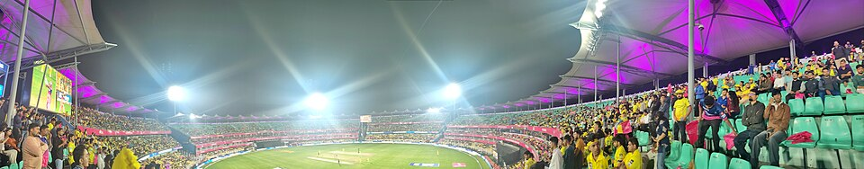
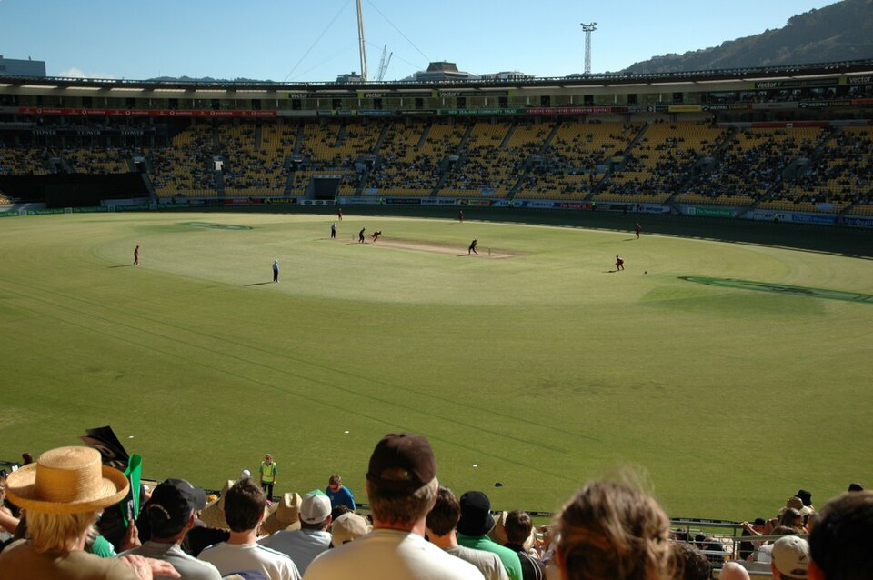

खेल
केन विलियमसन बने डरबन सुपर जायंट्स के नए हेड कोच
न्यूजीलैंड के पूर्व कप्तान केन विलियमसन को 2027 SA20 लीग के लिए डरबन सुपर जायंट्स का हेड कोच नियुक्त किया गया है।
 खेल
खेलदक्षिण अफ्रीका के वियान मुल्डर ने टेस्ट मैच में शतक और 5 विकेट लेकर रचा इतिहास
दक्षिण अफ्रीका के ऑलराउंडर वियान मुल्डर ने बांग्लादेश के खिलाफ टेस्ट मैच में शतक जड़ने के साथ गेंदबाजी में 5 विकेट लेकर एक खास उपलब्धि हासिल की है।
 खेल
खेलदक्षिण अफ्रीका ने बांग्लादेश को दूसरे टेस्ट में पारी और 219 रन से हराया
दक्षिण अफ्रीका ने सेंचूरियन टेस्ट में बांग्लादेश को एक पारी और 219 रन से हराकर दो मैचों की सीरीज 2-0 से अपने नाम कर ली। मैच महज तीन दिन में समाप्त हो गया।
खेलजिम्बाब्वे महिला क्रिकेट टीम के कोच मार्क कोल्स पर आईसीसी की कार्रवाई, कटी मैच फीस
आईसीसी ने जिम्बाब्वे महिला क्रिकेट टीम के हेड कोच मार्क कोल्स को आयरलैंड की कप्तान और कोच के खिलाफ आपत्तिजनक भाषा का इस्तेमाल करने पर सजा दी है। उनकी 65 फीसदी मैच फीस काटी गई है और तीन डिमेरिट अंक दिए गए हैं।
खेलवैभव सूर्यवंशी के रिकॉर्ड प्रदर्शन के बाद टी20 टीम में जगह को लेकर चर्चा तेज़
वैभव सूर्यवंशी ने एशिया कप राइज़िंग स्टार्स में यूएई के ख़िलाफ़ 204 रनों की रिकॉर्डतोड़ पारी खेली है। इस शानदार प्रदर्शन के बाद उनके भारतीय टी20 टीम में नियमित रूप से खेलने को लेकर सवाल उठने लगे हैं।
 खेल
खेलवैभव सूर्यवंशी की आतिशी पारी पर पाकिस्तान के पूर्व क्रिकेटरों की प्रतिक्रिया
एशिया कप राइजिंग स्टार्स में यूएई के खिलाफ 15 वर्षीय वैभव सूर्यवंशी के रिकॉर्ड दोहरे शतक की पाकिस्तान के पूर्व क्रिकेटरों ने जमकर तारीफ की है।

खेलIPL 2027 ऑक्शन: आर्यवीर सहवाग और डेविड वार्नर ने कराया रजिस्ट्रेशन
आईपीएल 2027 की नीलामी के लिए आर्यवीर सहवाग और डेविड वार्नर सहित कई प्रमुख खिलाड़ियों ने रजिस्ट्रेशन कराया है। बीसीसीआई ने फ्रेंचाइजियों को खिलाड़ियों की अंतिम सूची सौंप दी है।
खेलIPL 2027 नीलामी के लिए रजिस्ट्रेशन आंकड़े आए सामने, 66 स्थानों के लिए 1,220 खिलाड़ी मैदान में
आईपीएल 2027 की आगामी नीलामी के लिए कुल 1,220 खिलाड़ियों ने पंजीकरण कराया है, जिनमें से 66 रिक्त स्थानों के लिए मुकाबला होगा। इसमें 170 कैप्ड अंतरराष्ट्रीय और 14 कैप्ड भारतीय खिलाड़ी शामिल हैं।
 खेल
खेलइंग्लैंड ने दूसरे टी20 मुकाबले में ऑस्ट्रेलिया को आठ विकेट से हराया
ऑस्ट्रेलिया के खिलाफ दूसरे टी20 मुकाबले में इंग्लैंड ने शानदार वापसी करते हुए आठ विकेट से जीत दर्ज की। एनरिन डॉनल्ड ने ताबड़तोड़ 85 रन बनाए।
 खेल
खेलआईपीएल 2027 मिनी ऑक्शन के लिए बेन स्टोक्स को मिली अनुमति, 1220 खिलाड़ियों ने कराया पंजीकरण
आईपीएल 2027 मिनी ऑक्शन के लिए इंग्लैंड के बेन स्टोक्स को विशेष रूप से पंजीकरण की अनुमति मिल गई है। आगामी नीलामी के लिए कुल 1220 खिलाड़ियों ने अपना नाम दर्ज कराया है, जिसमें बांग्लादेश के भी 12 खिलाड़ी शामिल हैं।
खेलइंग्लैंड ने दूसरे टी20 में ऑस्ट्रेलिया को हराया, सीरीज 1-1 से बराबर
इंग्लैंड ने दूसरे टी20 मुकाबले में ऑस्ट्रेलिया को 8 विकेट से हरा दिया। इस जीत के साथ पांच मैचों की सीरीज 1-1 की बराबरी पर पहुंच गई है।
 खेल
खेलवैभव सूर्यवंशी ने राइजिंग स्टार एशिया कप में जड़ा दोहरा शतक
वैभव सूर्यवंशी ने 2026 राइजिंग स्टार एशिया कप में यूएई के खिलाफ इंडिया-ए की ओर से खेलते हुए 204 रन बनाए और कई रिकॉर्ड अपने नाम किए।
खेलवैभव सूर्यवंशी ने एशिया कप में जड़ा दोहरा शतक, बनाए कई रिकॉर्ड
15 वर्षीय भारतीय खिलाड़ी वैभव सूर्यवंशी ने एशिया कप राइजिंग स्टार्स मुकाबले में यूएई के खिलाफ 53 गेंदों में 204 रन बनाकर इतिहास रच दिया है।
खेलवैभव सूर्यवंशी ने एशिया कप में जड़ा ऐतिहासिक दोहरा शतक, महज 53 गेंदों में बनाए 204 रन
राइजिंग स्टार्स एशिया कप में भारत ए के बल्लेबाज वैभव सूर्यवंशी ने यूएई के खिलाफ मात्र 53 गेंदों में 204 रनों की ऐतिहासिक पारी खेली। उन्होंने लिस्ट ए क्रिकेट में सबसे तेज शतक, डेढ़ सौ और दोहरे शतक का रिकॉर्ड अपने नाम किया।
खेलवैभव सूर्यवंशी ने जड़ा लिस्ट-ए का सबसे तेज दोहरा शतक, भारत ने यूएई को हराया
वैभव सूर्यवंशी ने यूएई के खिलाफ 52 गेंदों में दोहरा शतक जड़कर लिस्ट-ए क्रिकेट इतिहास का सबसे तेज दोहरा शतक बनाया। भारत-ए ने 250 रन के लक्ष्य को महज 14.2 ओवर में हासिल कर लिया।
खेलवैभव सूर्यवंशी ने 28 गेंदों में जड़ा शतक, बनाया सबसे तेज लिस्ट-ए सेंचुरी का वर्ल्ड रिकॉर्ड
एशिया कप राइजिंग स्टार्स 2026 में इंडिया-ए के लिए खेलते हुए 15 वर्षीय वैभव सूर्यवंशी ने यूएई के खिलाफ मात्र 28 गेंदों में शतक जड़कर लिस्ट-ए क्रिकेट में सबसे तेज शतकों का विश्व रिकॉर्ड अपने नाम कर लिया।
खेलराइजिंग स्टार्स एशिया कप: यूएई ने भारत को दिया 250 रन का लक्ष्य
एशिया कप राइजिंग स्टार्स 2026 के मुकाबले में यूएई ने भारत-ए के खिलाफ पहले बल्लेबाजी करते हुए 50 ओवर में 8 विकेट पर 249 रन बनाए। हरप्रीत सिंह ने शतकीय पारी खेली।
खेलप्रियांश आर्य ने टी20 क्रिकेट में रचा इतिहास, खेली 181 रन की ऐतिहासिक पारी
दिल्ली के बल्लेबाज प्रियांश आर्य ने सैयद मुश्ताक अली ट्रॉफी में 181 रन की पारी खेलकर टी20 क्रिकेट में नया रिकॉर्ड बनाया है। वह टी20 में सबसे बड़ा निजी स्कोर बनाने वाले भारतीय खिलाड़ी बन गए हैं।
खेलआईसीसी ने गेंद चमकाने के लिए लार के इस्तेमाल पर प्रतिबंध हटाने से इनकार किया
भारतीय कप्तान शुभमन गिल की मांग के बावजूद अंतर्राष्ट्रीय क्रिकेट परिषद ने गेंद को चमकाने के लिए लार के इस्तेमाल पर लगा बैन हटाने से इनकार कर दिया है।
खेलएशिया कप राइजिंग स्टार्स: भारत ए और यूएई के बीच मुकाबला, आर्यंश शर्मा आउट
एशिया कप राइजिंग स्टार्स के मुकाबले में भारत ए का सामना यूएई से हो रहा है। मैच में यूएई की टीम को पहला झटका लग गया है और आर्यंश शर्मा आउट हो गए हैं।
 खेल
खेल2018 के सैंडपेपरगेट के बाद ऑस्ट्रेलियाई टीम में मिंट के इस्तेमाल का दावा
ऑस्ट्रेलियाई मीडिया रिपोर्ट में दावा किया गया है कि 2018 के सैंडपेपरगेट कांड के कुछ महीने बाद दुबई टेस्ट के दौरान खिलाड़ियों ने गेंद की स्थिति बदलने के लिए मिंट के इस्तेमाल पर चर्चा की थी।
 खेल
खेलएशिया कप राइजिंग स्टार्स: भारत-ए और यूएई मुकाबले का समय बदला, जानिए डिटेल्स
एशिया कप राइजिंग स्टार्स में भारत-ए का मुकाबला मंगलवार को यूएई से होगा। इस मैच के समय में बदलाव किया गया है, जो अब भारतीय समयानुसार सुबह 11:30 बजे शुरू होगा।
खेलबांग्लादेश की टीम दूसरे टेस्ट की पहली पारी में 91 रन पर ऑल आउट
सेंचुरियन में खेले जा रहे दूसरे टेस्ट मैच की पहली पारी में बांग्लादेश की पूरी टीम महज 91 रनों पर सिमट गई। साउथ अफ्रीकी गेंदबाजों ने शानदार प्रदर्शन करते हुए शुरुआती दिन ही मैच पर शिकंजा कस लिया है।
खेलएशिया कप राइजिंग स्टार्स: सेमीफाइनल की रेस में फंसी इंडिया-ए, जानिए क्या है समीकरण
पाकिस्तान के खिलाफ हार के बाद एशिया कप राइजिंग स्टार्स 2026 में इंडिया-ए का सेमीफाइनल टिकट अभी पक्का नहीं हुआ है। यूएई के खिलाफ होने वाले मुकाबले और नेट रन रेट पर भारत की आगे की राह टिकी है।
 खेल
खेलभारत-न्यूजीलैंड पहला टेस्ट ड्रॉ, सौरव गांगुली ने टीम चयन पर उठाए सवाल
भारत और न्यूजीलैंड के बीच पहला टेस्ट मैच ड्रॉ रहा। मैच के बाद पूर्व कप्तान सौरव गांगुली ने विदेश दौरों पर विशेषज्ञ स्पिनर को शामिल न करने पर चयनकर्ताओं से सवाल पूछा है।
खेलभारत और न्यूज़ीलैंड के बीच वेलिंगटन टेस्ट ड्रॉ, 352 रन की बढ़त के बाद भी नहीं मिली जीत
वेलिंगटन टेस्ट में पहली पारी में 352 रन की बढ़त लेने के बावजूद भारतीय टीम न्यूज़ीलैंड को हरा नहीं सकी। आखिरी दिन मैच ड्रॉ रहने के बाद कप्तान शुभमन गिल ने गेंदबाजों की थकान और गेंद की गुणवत्ता का हवाला दिया।
खेलवर्ल्ड टेस्ट चैंपियनशिप फाइनल: जानिए टीम इंडिया के समीकरण और आगे की राह
आईसीसी वर्ल्ड टेस्ट चैंपियनशिप 2025-27 चक्र में टीम इंडिया के सामने फाइनल की राह कठिन हो गई है। न्यूजीलैंड के खिलाफ सीरीज और आगामी मुकाबलों के बाद ही स्थिति साफ होगी।
खेलशोएब अख़्तर का दावा, उनके दौर में पाकिस्तानी खिलाड़ी भी करते थे बॉल टैंपरिंग
पाकिस्तान के पूर्व तेज़ गेंदबाज़ शोएब अख़्तर ने एक इंटरव्यू में स्वीकार किया है कि उनके खेलने के दौर में पाकिस्तानी खिलाड़ी भी बॉल टैंपरिंग करते थे। उन्होंने कहा कि इसके लिए बोतलों के ढक्कनों का इस्तेमाल किया जाता था।
 खेल
खेलन्यूजीलैंड के खिलाफ पहले टेस्ट में मोहम्मद सिराज को क्यों बैठाया गया था बेंच पर, कप्तान शुभमन गिल ने बताई वजह
न्यूजीलैंड के खिलाफ पहला टेस्ट ड्रॉ होने के बाद भारतीय कप्तान शुभमन गिल ने मोहम्मद सिराज को प्लेइंग इलेवन से बाहर रखने के फैसले पर सफाई दी है।
खेलराइजिंग स्टार एशिया कप: पाकिस्तान ए ने भारत ए को 48 रनों से हराया
राइजिंग स्टार एशिया कप के मुकाबले में पाकिस्तान ए ने भारत ए को 48 रनों से हरा दिया। अभिषेक शर्मा और कप्तान तिलक वर्मा के शानदार प्रदर्शन के बावजूद भारतीय टीम लक्ष्य हासिल करने में नाकाम रही।
खेलएशिया कप राइजिंग स्टार्स: पाकिस्तान ए ने भारत ए को हराया
दोहा में खेले गए एसीसी इमर्जिंग टीम्स एशिया कप 2026 के मुकाबले में पाकिस्तान ए ने भारत ए को 48 रन से हरा दिया है। मैच के दौरान दोनों टीमों के बीच तनाव और खिलाड़ियों के व्यवहार की भी चर्चा रही।
खेलभारत और न्यूजीलैंड के बीच पहला टेस्ट मैच ड्रॉ, कप्तान शुभमन गिल ने कही यह बात
भारत और न्यूजीलैंड के बीच वेलिंगटन में खेला गया पहला टेस्ट मैच ड्रॉ पर समाप्त हुआ। कप्तान शुभमन गिल ने मैच के बाद कहा कि पिच पर दस विकेट लेना एक बड़ी चुनौती थी।

खेलIND-NZ टेस्ट ड्रॉ होने के बाद वर्ल्ड टेस्ट चैंपियनशिप पॉइंट्स टेबल में बदलाव
भारत और न्यूजीलैंड के बीच पहला टेस्ट मैच ड्रॉ होने के बाद वर्ल्ड टेस्ट चैंपियनशिप पॉइंट्स टेबल में फेरबदल हुआ है। न्यूजीलैंड तीसरे स्थान पर खिसक गया है, जबकि भारतीय टीम चौथे पायदान पर है।
खेलभारत और न्यूजीलैंड के बीच पहला टेस्ट ड्रॉ, 12 साल का इंतजार बरकरार
वेलिंगटन में खेला गया भारत और न्यूजीलैंड के बीच पहला टेस्ट मैच पांचवें दिन ड्रॉ पर समाप्त हुआ। इसके साथ ही न्यूजीलैंड में टेस्ट सीरीज जीतने का भारत का 12 साल पुराना इंतजार जारी है।
खेलराइजिंग स्टार्स एशिया कप: भारत के खिलाफ मैच के दौरान पाकिस्तानी खिलाड़ियों से भिड़े हर्षित राणा
राइजिंग स्टार्स एशिया कप में भारत और पाकिस्तान के मुकाबले के दौरान मैदान पर तीखी नोकझोंक देखने को मिली। पाकिस्तान ने यह मैच 48 रनों से अपने नाम किया।
खेलभारत-न्यूजीलैंड टेस्ट मैच के दौरान स्कूल ड्रेस में दिखे बच्चे, वीडियो वायरल
वेलिंगटन में भारत और न्यूजीलैंड के बीच खेले जा रहे टेस्ट मैच के दौरान स्कूल ड्रेस में पहुंचे कुछ बच्चों का वीडियो सोशल मीडिया पर वायरल हो रहा है।
खेलएशिया कप राइजिंग स्टार: पाकिस्तान के खिलाफ अभिषेक शर्मा की शानदार पारी
भारत के बल्लेबाज अभिषेक शर्मा ने एशिया कप राइजिंग स्टार में पाकिस्तान-ए के खिलाफ 42 गेंदों में 70 रनों की तेज पारी खेली, हालांकि भारतीय टीम यह मुकाबला हार गई।
खेलराइजिंग स्टार्स एशिया कप में डेड बॉल विवाद, पाकिस्तानी खिलाड़ियों ने अंपायर को घेरा
राइजिंग स्टार्स एशिया कप में भारत और पाकिस्तान के बीच मुकाबले के दौरान एक 'डेड बॉल' के फैसले पर बड़ा विवाद देखने को मिला। पाकिस्तानी खिलाड़ियों ने अंपायर के फैसले का कड़ा विरोध किया।
खेलराइजिंग स्टार्स एशिया कप: पाकिस्तान ए के खिलाफ हार के बाद आलोचनाओं से घिरे तिलक वर्मा
राइजिंग स्टार्स एशिया कप में पाकिस्तान ए के खिलाफ हार के बाद भारत ए के कप्तान तिलक वर्मा की मैच के बाद की टिप्पणियों पर सोशल मीडिया पर तीखी प्रतिक्रिया देखने को मिली है।
 खेल
खेलभारत-न्यूजीलैंड पहला टेस्ट: पांचवें दिन भारत को मिली पहली सफलता, डेवोन कॉनवे आउट
भारत और न्यूजीलैंड के बीच पहले टेस्ट मैच के पांचवें दिन भारतीय गेंदबाजों ने अच्छी शुरुआत की है। वॉशिंगटन सुंदर ने डेवोन कॉनवे को आउट कर टीम इंडिया को दिन की पहली सफलता दिलाई।
खेलभारत और न्यूजीलैंड के बीच वेलिंगटन टेस्ट का पांचवां और आखिरी दिन
भारत और न्यूजीलैंड के बीच खेले जा रहे पहले टेस्ट मैच का पांचवां और अंतिम दिन है। न्यूजीलैंड ने दूसरी पारी में दो विकेट पर 130 रन से आगे खेलना शुरू किया है।